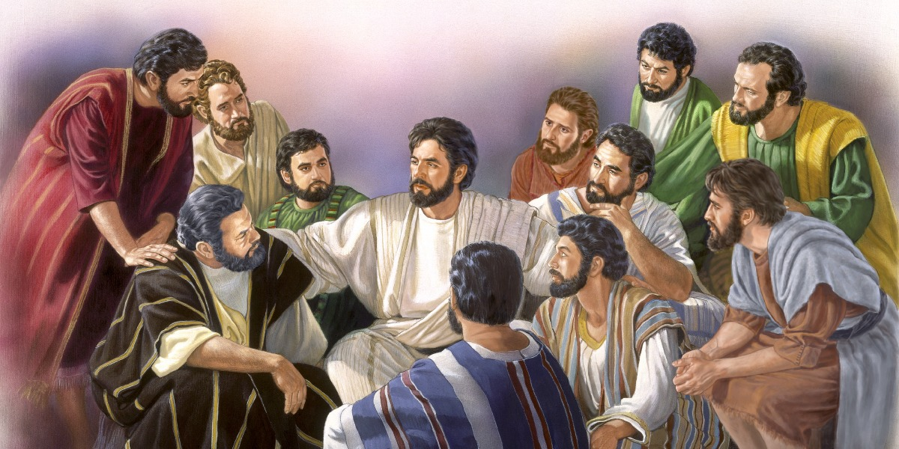

Leitura Orante do Evangelho
Ouca o audio com oracao e reflexao do
padre Fransico das Chages
Oração do dia
Ó Deus, que inflamastes de amor Santa Catarina de Sena, na contemplação da paixão do
Senhor e no serviço da Igreja, concedei-nos, por sua intercessão, participar do
mistério de Cristo, e exultar em sua glória. Por nosso Senhor Jesus Cristo, vosso
Filho, na unidade do Espírito Santo. Amém.
Primeira Leitura: Atos 13,13-25
13Paulo e seus companheiros embarcaram em Pafos e chegaram a Perge da Panfília.
João deixou-os e voltou para Jerusalém. 14Eles, porém, partindo de Perge, chegaram
a Antioquia da Pisídia. E, entrando na sinagoga em dia de sábado, sentaram-se.
15Depois da leitura da Lei e dos Profetas, os chefes da sinagoga mandaram dizer-lhes:
“Irmãos, se vós tendes alguma palavra para encorajar o povo, podeis falar”. 16Paulo
levantou-se, fez um sinal com a mão e disse: “Israelitas e vós que temeis a Deus,
escutai! 17O Deus deste povo de Israel escolheu os nossos antepassados e fez deles
um grande povo quando moravam como estrangeiros no Egito; e de lá os tirou com braço
poderoso. 18E, durante mais ou menos quarenta anos, cercou-os de cuidados no
deserto. 19Destruiu sete nações na terra de Canaã e passou para eles a posse do seu
território 20por quatrocentos e cinquenta anos aproximadamente. Depois disso,
concedeu-lhes juízes, até o profeta Samuel. 21Em seguida, eles pediram um rei, e
Deus concedeu-lhes Saul, filho de Cis, da tribo de Benjamim, que reinou durante
quarenta anos. 22Em seguida, Deus fez surgir Davi como rei e assim testemunhou a
seu respeito: ‘Encontrei Davi, filho de Jessé, homem segundo o meu coração, que vai
fazer em tudo a minha vontade’. 23Conforme prometera, da descendência de Davi Deus
fez surgir para Israel um salvador,que é Jesus. 24Antes que ele chegasse, João
pregou um batismo de conversão para todo o povo de Israel. 25Estando para terminar
sua missão, João declarou: ‘Eu não sou aquele que pensais que eu seja! Mas vede,
depois de mim vem aquele do qual nem mereço desamarrar as sandálias'”.
– Palavra do Senhor.
Salmo Responsorial: 88(89)
Ó Senhor, eu cantarei eternamente o vosso amor.
Ó Senhor, eu cantarei eternamente o vosso amor, / de geração em geração eu cantarei
vossa verdade! / Porque dissestes: “O amor é garantido para sempre!” / E a vossa
lealdade é tão firme como os céus.
Ó Senhor, eu cantarei eternamente o vosso amor.
“Encontrei e escolhi a Davi, meu servidor, / e o ungi, para ser rei, com meu óleo
consagrado. / Estará sempre com ele minha mão onipotente, / e meu braço poderoso há de
ser a sua força.
Ó Senhor, eu cantarei eternamente o vosso amor.
Não será surpreendido pela força do inimigo, / nem o filho da maldade poderá
prejudicá-lo. / Diante dele esmagarei seus inimigos e agressores, / ferirei e abaterei
todos aqueles que o odeiam.
Ó Senhor, eu cantarei eternamente o vosso amor.
Minha verdade e meu amor estarão sempre com ele, / sua força e seu poder por meu nome
crescerão. / Ele, então, me invocará: ‘Ó Senhor, vós sois meu Pai, / sois meu Deus, sois
meu rochedo onde encontro a salvação!'
Ó Senhor, eu cantarei eternamente o vosso amor.
Evangelho: João 13,16-20
Depois de lavar os pés dos discípulos, Jesus lhes disse: 16“Em verdade, em verdade
vos digo, o servo não está acima do seu senhor e o mensageiro não é maior que aquele
que o enviou. 17 Se sabeis isso e o puserdes em prática, sereis felizes. 18 Eu não
falo de vós todos. Eu conheço aqueles que escolhi, mas é preciso que se realize o
que está na Escritura: ‘Aquele que come o meu pão levantou contra mim o calcanhar’.
19 Desde agora vos digo isso, antes de acontecer, a fim de que, quando acontecer,
creiais que eu sou. 20Em verdade, em verdade vos digo, quem recebe aquele que eu
enviar me recebe a mim; e quem me recebe, recebe aquele que me enviou”.
– Palavra da
salvação.